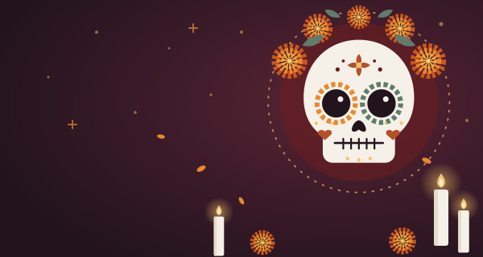

A1Spāņu valoda
Día de Muertos Mirušo diena spāņu valodā
Vārds Datums Cik labi man padevās?
1
Mirušo dienas vārdi
el / los — vīr. dz.la / las — siev. dz.
- el Día de MuertosMirušo diena (1.–2.11.)
- la ofrendapiemiņas altāris mājās
- la calaveragalvaskauss
- la calaverita de azúcarcukura galvaskausiņš
- la CatrinaKatrina — elegantā skeleta dāma
- el esqueletoskelets
- el cempasúchilsamtene (Mirušo dienas zieds)
- la florzieds
- la velasvece
- el pan de muerto“mirušo maize”
- el papel picadoizgriezta papīra virtenes
- la fotofotogrāfija
- el recuerdoatmiņa
- el cementeriokapsēta
- el almadvēsele (siev. dz.! dsk. las almas)
- los abuelosvecvecāki
- la familiaģimene
- el chocolate calientekarstā šokolāde
- la músicamūzika
- la nochenakts